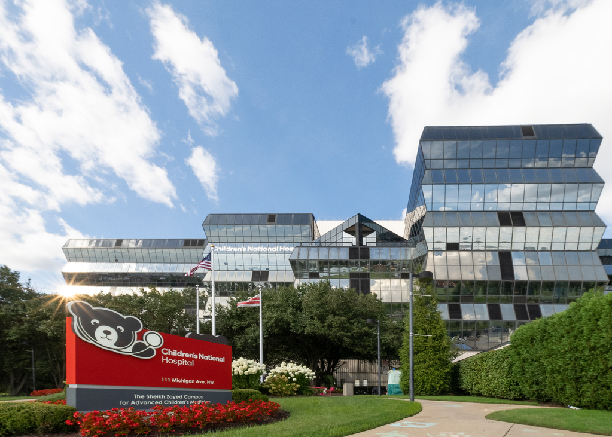
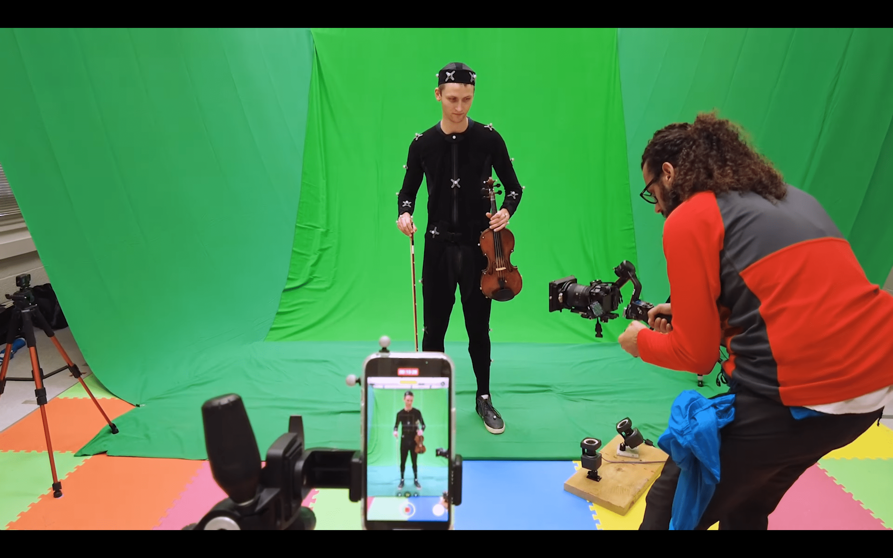
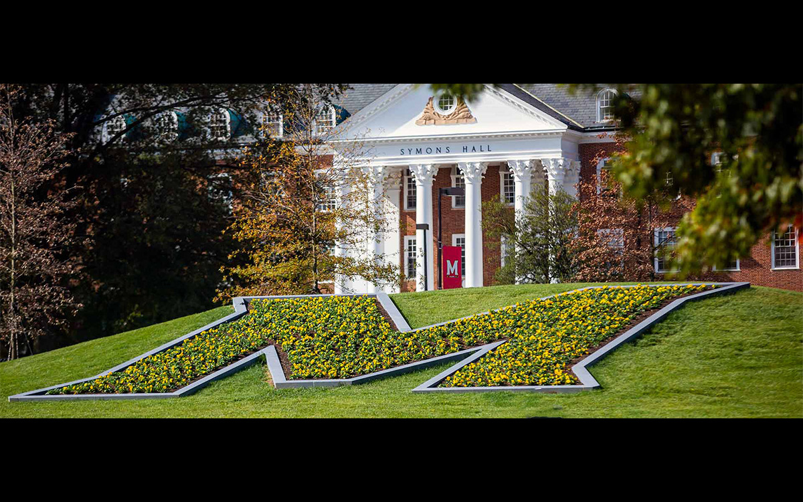
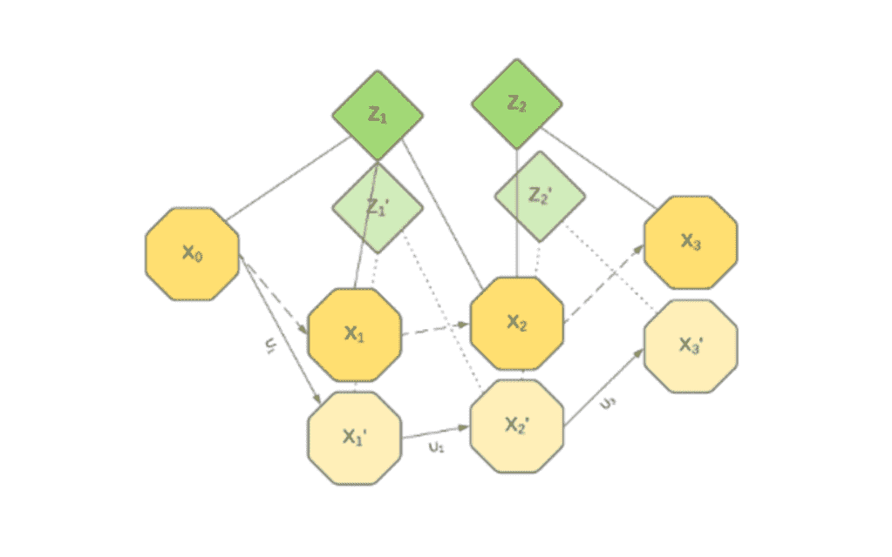
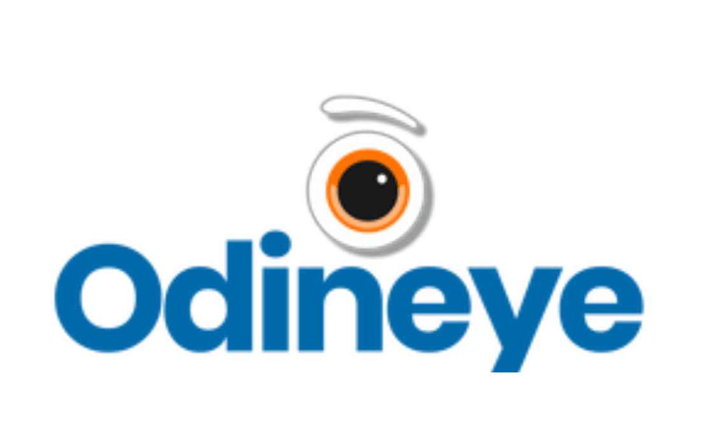
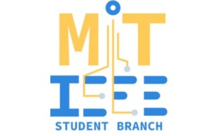
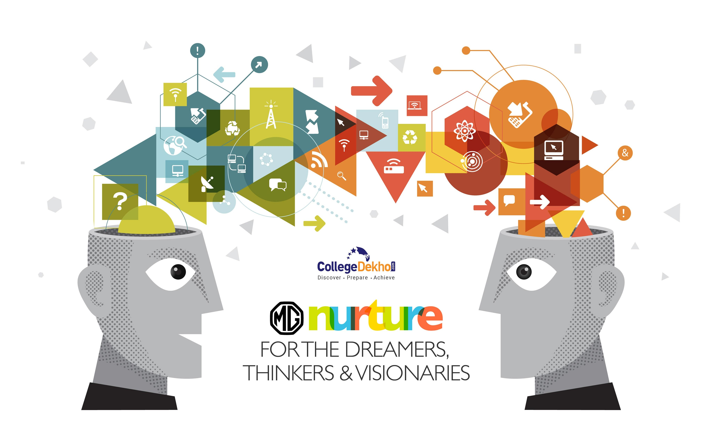

Children's National Hospital(Researcher Oct, 2023 - Current)
I am currenltly a ML and Robotics Research Engineer at the Children's National hospital working on Autonomous Medical Robotics and ML based Computer Vision solutions to diagnose and aid pediatric patients.

I participated in Research at the Perception Robotics Group to create motion capture features and combined multi-modal dataset for the research project VAIolin.

The I-school at UMD (Graduate Teaching Assistant Aug, 2022 - May, 2023)
Teaching Assistant for the course INST126 Introduction to Programming for Information Science.
Managed practical syllabus of over 60 students for 2 semesters each.
Handled assignment version maintenance, office hours, and grading as well.

A comprehensive review on Simultaneous Localization and Mapping(SLAM) on a multi-robot level.

Odineye technologies (Intern Jun, 2018 - May, 2019)
Developed hardware prototypes using Single Board Computer based Smart home security system to detect entrants of a home
and be able to infer on board, keeping the data secure and localized. Additionally deployed & performed system design for
different embedded Linux environments like Raspberry Pi 3B+, Nvidia Jetson Nano, Google Coral Accelerator & Dev Board. Presented the final
prototypes as part of my Bachelor's capstone project

MISB
Initially a volunteer and then the president of the Maharashtra Institute of Technology, Pune IEEE Student Branch(MISB).
NexI/O (Hardware manufacturing intern Aug, 2016 - Oct, 2016)
Design, manufacturing, and sale of 50+ prototypes for a the Startup NexI/O which created an ESP32 based Development board.

Morris Garages, India (Sales Intern March, 2021 - May, 2021)
Sales Intern at MG, India selected as part of the MG Nurture 2.0 programme as one of the 109 intern across 79 Indian cities.
{kind=link}
{kind=link}
{kind=link}
{kind=link}
{kind=link}
{kind=link}
{kind=link}
{kind=link}